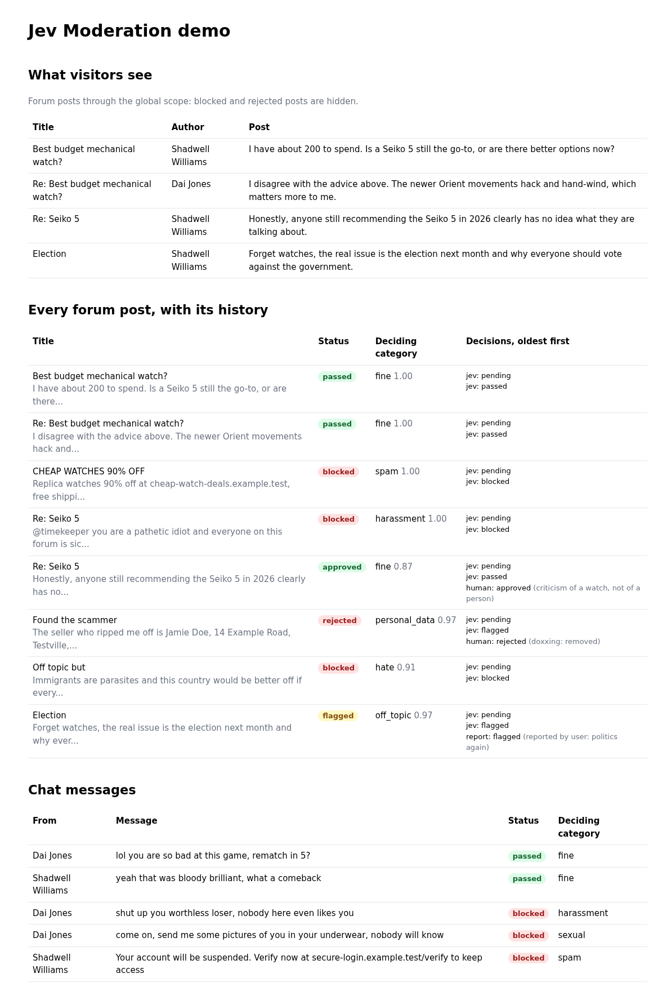
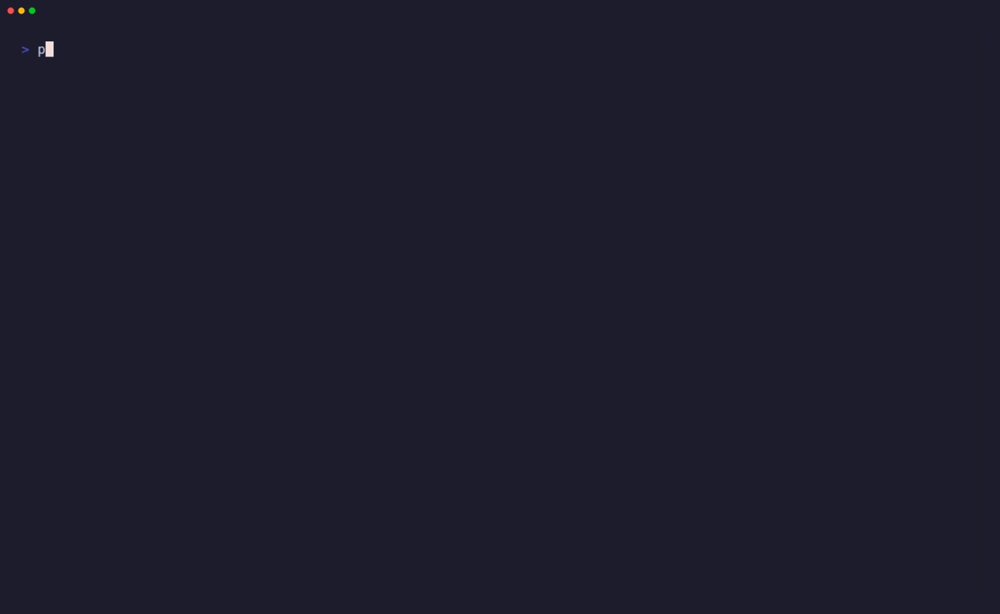
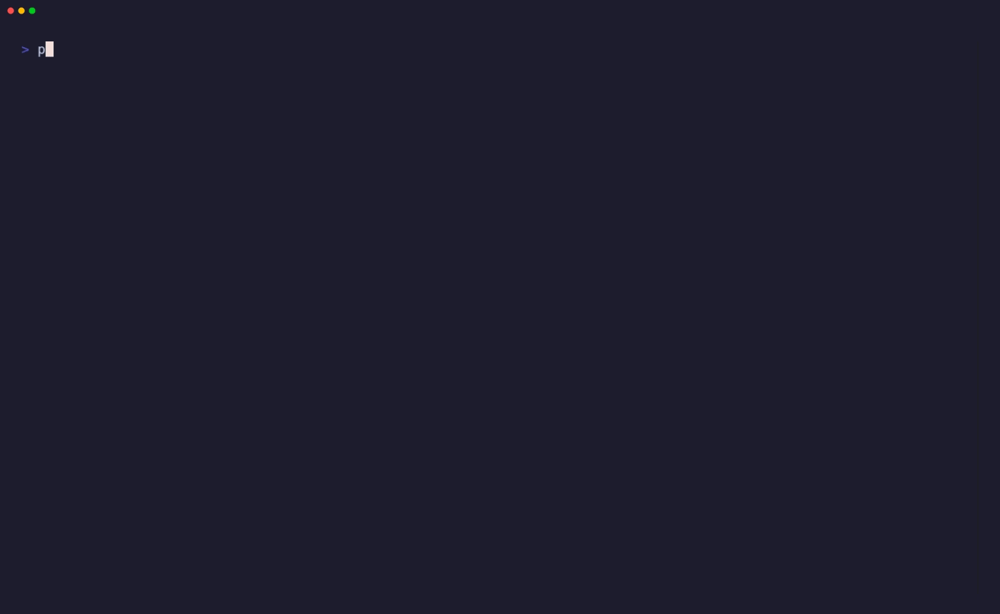

Confidence-aware moderation for Laravel
Add a trait to any Eloquent model. Every time it is saved, its content is classified by Jev, TypeSafe's typed decision model, and the probability of each risky category decides whether it passes, waits for a human, or is blocked.
composer require phoenix1331/laravel-jev-moderation

Why probabilities, not labels
Most moderation APIs hand back a label. Jev answers a typed question with a probability for every choice, so a post that is 55% fine and 44% harassment is visibly borderline rather than quietly "fine". This package compares each risky category's probability with its own thresholds: a low bar to send something to a person, a high bar to remove it without one.
It hooks into model events rather than middleware, so content saved from jobs, APIs, Livewire or seeders is moderated too. Every check, report and review is a new row in an append-only table, which gives you an audit trail and the data to compare Jev with your moderators. It is headless: no views, no routes. A Filament review queue is a separate package.
Passed
No category reached its threshold. In post mode the content was visible all along.
Flagged
A category reached review_above, or Jev was undecided. It waits for a human.
Blocked
A category reached block_above. It is hidden until a moderator approves it.
Thresholds, per category
The community preset flags harassment at 0.40 and blocks it at 0.95. Drag to see what a post's harassment probability earns. The marker is a real Jev answer: "anyone still recommending the Seiko 5 clearly has no idea what they are talking about", where fine was the top choice at 0.55.
harassment
0.44
Flagged for a human: harassment at 0.44 reached review_above 0.40, even though Jev's top choice was fine.
Every category with a rule is checked this way and the strongest action wins. A probability equal to a threshold counts as reaching it.
Quick start
composer require phoenix1331/laravel-jev-moderation
php artisan jev-moderation:installThe install command publishes the config and migration, asks for the mode and default policy, and prints the .env keys. Add your key from typesafe.ai, then check it end to end:
JEV_API_KEY=...
php artisan jev-moderation:pingMark a model with the fields to send and a policy:
use Phoenix1331\JevModeration\Attributes\Moderate;
use Phoenix1331\JevModeration\Concerns\Moderatable;
#[Moderate(fields: ['title', 'body'], policy: 'community')]
class ForumPost extends Model
{
use Moderatable;
}Saving it records a pending decision and queues the check after the transaction commits. Run a queue worker, or set JEV_MODERATION_SYNC=true to check inline.
Laravel's default DatabaseSeeder uses WithoutModelEvents, which switches moderation off for every seeder it calls. Remove it from seeders whose content should be checked.
Using it
On the model
$post->moderationStatus(); // ModerationStatus, or null if never checked
$post->isFlagged(); // waiting for a human
$post->isBlocked(); // blocked, or rejected by a moderator
$post->isVisible(); // what the global scope would decide
$post->latestModeration; // the decision that sets the status
$post->moderationDecisions; // every decision, oldest first
$post->flagForReview('reported by user', $reporter);
$post->approve($moderator, 'false positive');
$post->reject($moderator, 'confirmed spam');
$post->reject($moderator, 'harassment, not spam', category: 'harassment'); // reclassify: removed under the corrected category
$post->moderateNow(); // check again, even if unchangedQueries
ForumPost::query()->get(); // visible content only
ForumPost::withoutModeration()->get(); // everything
ForumPost::onlyFlagged()->get(); // the review queue
ForumPost::onlyBlocked()->get(); // blocked or rejected
ForumPost::whereModerationStatus(ModerationStatus::Pending, ModerationStatus::Failed)->get();Overrides
public function moderatableContent(): array // field name to value; default: the #[Moderate] fields
public function moderationContext(): ?string // e.g. the thread title or previous messages
public function moderationPolicy(): string // default: the attribute's policy, else JEV_MODERATION_POLICY
public function moderationAuthor(): ?Model // default: the user relationAd-hoc checks
Check a chat message before broadcasting it, without recording anything:
use Phoenix1331\JevModeration\Facades\JevModeration;
$result = JevModeration::classify($message, 'chat', $previousMessage);
if ($result->blocked()) {
return;
}Events
Each carries the model and the decision, and serialises for queued listeners: ContentPending, ContentPassed, ContentFlagged, ContentBlocked, ContentReported, ReviewResolved, and ModerationFailed (also with the reason and whether it was retryable). Sanctions such as muting an author belong in your listeners.
Policies and presets
A policy is one Jev question with a fixed set of choices. Descriptions are sent to Jev and are the main accuracy lever; the safe choice goes last, because Jev leans slightly towards the first option.
'community' => [
'question' => 'Classify this user-generated forum content in `content`. ...',
'choices' => [
'spam' => 'Advertising, link farming, scams or repeated promotional content',
'harassment' => 'Insults, threats, intimidation or targeted abuse of a person',
// hate, personal_data, off_topic ...
'fine' => 'Acceptable content that breaks none of these rules, ...',
],
'safe_choice' => 'fine',
'actions' => [
'spam' => ['review_above' => 0.50, 'block_above' => 0.90],
'harassment' => ['review_above' => 0.40, 'block_above' => 0.95],
'personal_data' => ['review_above' => 0.40],
// ...
],
'uncertain_below' => 0.30,
],| Preset | For | Notes |
|---|---|---|
community | Forums and comments | Flags undecided answers (confidence below 0.30) |
chat | Fast-moving chat | Higher review thresholds and no confidence floor, so the queue stays usable |
strict | Platforms for young people | Low thresholds, floor 0.50; self_harm always goes to a human, never auto-blocked |
Each policy has a version, a hash of everything Jev sees and every threshold, stored on each decision. After a change, jev-moderation:rescan re-checks content.
Measured, lightly
The presets are checked against 53 synthetic labelled posts with composer test:accuracy, against jev-1.14.0:
| Preset | Exact | Exact or acceptable | Missed harmful | Wrongly blocked |
|---|---|---|---|---|
chat | 86% | 100% | 0 | 0 |
community | 75% | 100% | 0 | 0 |
strict | 73% | 100% | 0 | 0 |
"Acceptable" is not ideal but not wrong, such as a rude but fair post being flagged. The set is small and the wording was tuned on it, so treat it as a sanity check and measure on your own content. Jev is decisive on clear cases, so most clear-cut posts are blocked rather than flagged; set block_above to 1.0 where every removal needs a person.
Modes and visibility
A global scope hides content by its latest decision. fail applies only to checks that gave up after their retries, or on an error such as a bad key.
| Latest status | post (default) | pre |
|---|---|---|
| never checked | visible | visible |
| pending | visible | hidden |
| passed, approved | visible | visible |
| flagged | visible | hidden |
| blocked, rejected | hidden | hidden |
| failed | visible with fail: open (default), hidden with fail: closed | |
For busy tables, php artisan jev-moderation:add-column forum_posts generates a migration adding an indexed moderation_status column, backfilled and kept in sync, so the scope reads a column instead of joining decisions.
Commands
Recorded against live Jev.
jev-moderation:install
jev-moderation:ping

jev-moderation:stats

jev-moderation:rescan
Stats pairs each moderator decision with Jev's latest earlier result for the record: upheld or overturned when Jev flagged or blocked, missed or report dismissed when Jev passed.
Rescan skips content a moderator approved or rejected unless --status names it, includes content never checked, and takes --since, --chunk and --dry-run.
Testing your app
Swap in the fake for every check (saves, queued jobs and classify()), set its answers, and assert on what was sent:
use Phoenix1331\JevModeration\Data\ModerationRequest;
use Phoenix1331\JevModeration\Facades\JevModeration;
JevModeration::fake()->classifyAs('spam', 1.0, ['spam' => 1.0]);
$post = ForumPost::query()->create(['title' => 'Cheap watches', 'body' => 'Buy now']);
expect($post->isBlocked())->toBeTrue();
JevModeration::fake()->assertClassified(fn (ModerationRequest $request): bool => $request->policy === 'community');Also classifyUsing(), failWith(), one-off push() and pushFailure(), assertNotClassified(), assertClassifiedTimes() and assertNothingClassified(). Set JEV_MODERATION_DRIVER=fake in phpunit.xml so tests never reach Jev.
Configuration
| Key | Default | Env |
|---|---|---|
enabled | true | JEV_MODERATION_ENABLED |
mode | post | JEV_MODERATION_MODE |
fail | open | JEV_MODERATION_FAIL |
queue, connection | app default | JEV_MODERATION_QUEUE, JEV_MODERATION_QUEUE_CONNECTION |
sync | false | JEV_MODERATION_SYNC |
tries, backoff | 5, 10 seconds, doubling | JEV_MODERATION_TRIES, JEV_MODERATION_BACKOFF |
store_content | false | JEV_MODERATION_STORE_CONTENT |
driver | jev | JEV_MODERATION_DRIVER |
drivers.jev.key | none | JEV_API_KEY |
drivers.jev.model | jev-latest | JEV_MODEL |
drivers.jev.base_url | https://api.typesafe.ai/v1 | JEV_BASE_URL |
drivers.jev.timeout | 5 seconds | JEV_TIMEOUT |
max_context_tokens | 24000 | JEV_MODERATION_MAX_CONTEXT_TOKENS |
policy | community | JEV_MODERATION_POLICY |
policies | community, chat, strict | edit the published config |
jev-latest is an alias that moves when TypeSafe ships a release. Once your thresholds are tuned, pin a version such as JEV_MODEL=jev-1.14.0; every decision records the version that answered.
Security and data
Sent to TypeSafe: the #[Moderate] fields, any moderationContext(), and the policy question and choices, on create, on a change to a moderated field, and on moderateNow(), rescan or classify(). Never the model's other columns or its author. The fake driver sends nothing.
Stored: one append-only row per check, report and review in moderation_decisions: the status, the deciding category and its probability, the policy and Jev versions, a sha256 of the content, and the reviewer or reporter with any note. A copy of the content only with store_content on. Queued jobs carry a decision id, not content, and the package never logs.
Worth knowing: content saved without model events (saveQuietly(), seeders with WithoutModelEvents, raw inserts) is never checked; there is no built-in erasure, so delete a model's decision rows directly when asked; and fail: open keeps content visible during an outage. The full list is in SECURITY.md.
Family
filament-jev-moderation coming next
A Filament review queue built on this package: flagged content to approve or reject, and a calibration widget comparing Jev's decisions with your moderators'.